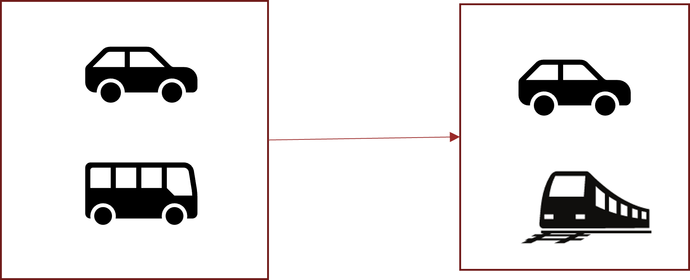

摘要
This paper investigates the effects of intercity commuting on travel characteristics and urban performances. A spatial equilibrium model of the two-city system which involves the （①travel mode choice and workplace selection equilibrium）, as well as the( ②housing demand and supply equilibrium), is proposed and well formulated. A two-level iterative procedure is presented, and the properties of the proposed model are analytically and numerically analyzed. 【The finding shows that, the improvement of intercity commuting always ①improves the households’ utility level. ②From the respects of spatial structure and intercity commuters, both two cities become more compact, the number of households residing in the less economically developed city and intercity commuters both increase with the improvement of intercity commuting condition when incomes are exogenous. ③When agglomeration effects are considered, the city boundaries and the population of developed city and the left boundary of less developed city increase firstly and then decrease, and the right boundary of less developed city keeps decreasing with the improvement of intercity train. 】
本文研究了城际通勤对出行特征和城市性能的影响。本文提出了一个双城系统的空间均衡模型，该模型涉及出行方式选择和工作场所选择均衡，以及住房需求和供给均衡。提出了一个两级迭代程序，并对所提模型的特性进行了分析和数值计算。研究结果表明，城际通勤的改善总是能提高家庭的效用水平。从空间结构和城际通勤者的角度来看，当收入为外生因素时，两个城市都变得更加紧凑，居住在经济欠发达城市的家庭数量和城际通勤者数量都会随着城际通勤条件的改善而增加。当考虑人口集聚效应（城市的经济会随着人口的增加而提升从而带动可持续收入的增加）时，发达城市和欠发达城市左边界的城市边界和人口数量先增加后减少，欠发达城市右边界的城市边界和人口数量随着城际列车的改善而不断减少。
引言和假设
引言
城际交通促进了区域经济的协调和发展，在近几十年进入了建设的高峰期。一方面，城际通勤的改善增强了各区域的可达性，直接影响了通勤者的出行行为及工作地点的选择。另一方面，城际通勤已成为居民和产业迁移的主要驱动力之一，进而引发城市空间结构（城市布局、城市边界等）的变化。
为了实现可持续的城市发展，探讨城际通勤对出行特征和城市性能（如城市规模、居住分布、房租等）的影响是至关重要的。
提出了一个简化的分析空间均衡模型，适用于两城市、多模式交通情况，描述了居住位置、工作地点和出行方式选择行为之间的相互作用，用于研究城际通勤对出行特征（如模式边界、模式份额）和城市绩效（如人口分布、城市规模、住房租金、住房消费和家庭效用）的影响。
多模式
这里所说的多模式是指采用多种交通方式，并且很多跨城市出行是多种交通方式的组合，比如可能乘坐公共交通或者驾车去高铁站，然后乘坐高铁去工作地点，因此城市间出行方式的选择不仅依赖于市外交通的质量还依赖于城市内交通的质量。
城市异质性
这里认为两个城市之间存在异质性因此人们才会考虑跨城市通勤
异质性体现在两个方面：
①工资水平
②城市基础设施建设水平
框架
城市结构
 $$
论文研究两个线性单中心城市组成的封闭经济体，标记为城市1和城市2。
城市i的CBD设置为城市中心的一个点：X_i^s=0
$$
$$
论文研究两个线性单中心城市组成的封闭经济体，标记为城市1和城市2。
城市i的CBD设置为城市中心的一个点：X_i^s=0
$$
$$ \overline{X_{i}^{s}} = 0:s∈{+，-}，i∈{1,2}城市边界与CBD的距离，s为-时为左边界，s为+为右边界 $$
$$ X_{i}^{s}:s∈{+，-}，i∈{1,2}某地到i城CBD的距离 $$
$$ 假设：两个城市边界不重叠，因此D>x_1^++x_-^2 $$
基本假设
A1经济体特征：
①经济体是封闭的，人口总数是外生且固定的，家庭可在两个城市之间迁移，因此每个城市中的家庭人口数量是内生的。
②城市1经济发达，基本收入高于城市2。
③所有土地均为缺席地主所有，城市边界内的土地价值不低于农业租金，而城市边界及以外的土地价值等于农业租金。
A2城市内部交通：
①出行成本随旅行距离线性增加驾车固定成本高但变动成本低于公共交通
②在城市边界，驾车始终比乘坐公共交通便宜
③一个家庭有且仅有一个通勤者
A3住房市场供应：
房地产开发商目标是最大化每单位土地面积的住房投资利润。采用Cobb-Douglas住房生产函数。
A4住房市场需求：
①所有家庭理性且同质，收入由工作地点决定
②可支配收入用于住房消费和非住房商品消费，目标是最大化效用。
**A5城市设施水平：**经济水平高的城市设施水平高，每座城市的城市设施水平随着与CBD的距离增加而降低，在城市左右两边对称，并直接影响家庭效用